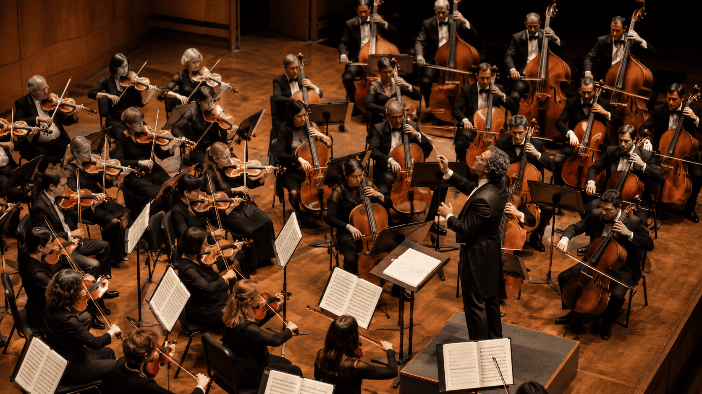
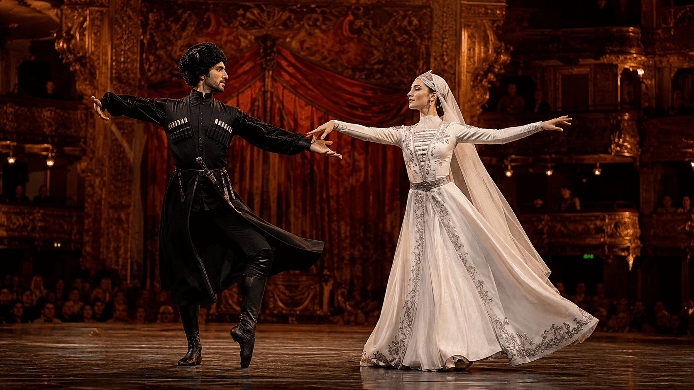
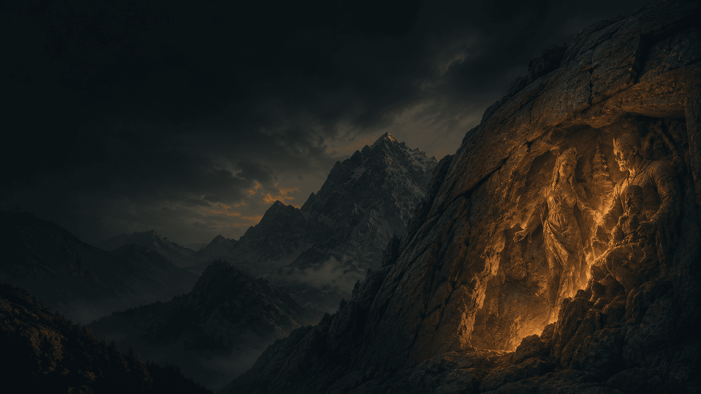
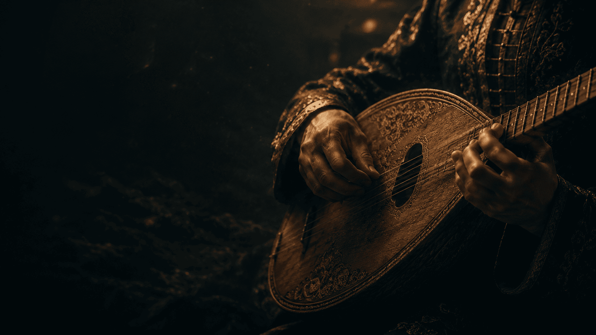

01
Оркестр или филармония
История, руководство, афиша, состав, репертуар, видео, пресс-раздел и контакты.
Сайт учрежденияПартнёрские решения
Аккуратный коммерческий слой рядом с порталом: сайты для оркестров, филармоний, ансамблей, солистов, педагогов, фестивалей и музыкальных проектов.
Кому полезно
Портал «Журавли» остаётся просветительским ресурсом. Этот раздел нужен для тех, кому требуется отдельный официальный сайт, пресс-кит, портфолио или цифровая презентация.

История, руководство, афиша, состав, репертуар, видео, пресс-раздел и контакты.
Сайт учреждения
Сценические программы, состав, гастроли, медиа, костюмы, репертуар и заявка на выступление.
Сайт коллектива
Биография, репертуар, видео, фото, пресса, календарь и концертное предложение.
Сайт артиста
Программа, участники, площадки, новости, архив прошлых лет, партнёры и форма заявки.
Сайт событияЭкосистема